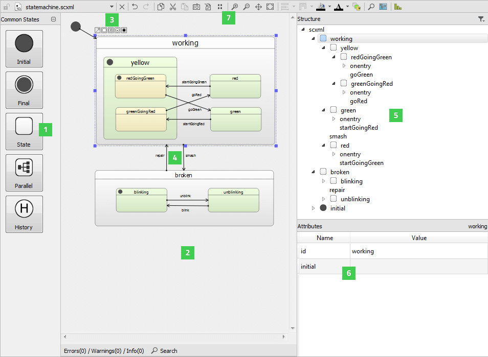
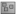

Editing State Charts
State charts provide a graphical way of modeling how a system reacts to stimuli. This is done by defining the possible states that the system can be in, and how the system can move from one state to another (transitions between states). A key characteristic of event-driven systems (such as Qt applications) is that behavior often depends not only on the last or current event, but also the events that preceded it. With state charts, this information is easy to express.
Qt Creator provides a project wizard for adding State Chart XML (SCXML) files with boilerplate code to projects and an experimental SCXML editor for editing the state charts. You can use the SCXML editor to add states and transitions to the files. You can then use the classes in the Qt SCXML module to embed the state machines created from the files in Qt applications.

You can drag and drop states from the Common States view (1) to the state editor (2). Select a state in the state editor and use the tool buttons (3) to create a transition (4) and its target state.
You can view the state chart structure in the Structure view (5) and specify attributes for the selected state or transition in the Attributes view (6).
You can use the toolbar buttons (7) to execute functions such as editing, zooming, magnifying, navigating, and panning state charts, as well as taking screenshots and viewing statistics.
To zoom into and out of the whole state chart in the state editor, select Zoom In or Zoom Out or press Ctrl and use the mouse wheel. To make the whole state chart visible in the state editor at a time, select (Fit to View).
To view a particular part of a large state chart in the state editor, select  (Navigator) and move the navigator frame on the part you want to view.
To use the magnifier to zoom into a part of the state chart, select (Magnifier Tool). To move the magnifier tool faster, press down the Alt key.
To pan the state chart, select (Panning). To increase the pace of panning, press down the Shift key.
To view statistics about the numbers of states and transitions in the state chart, select (View Statistics).
To search from the state chart, use the Search pane. The search checks the whole SCXML tree for attributes that match the search criteria.
To save the currently visible part of the state chart as an image, select (Save Screenshot). To save the whole state chart as an image, select (Export Canvas to Image).
Creating State Charts
To create a state chart:
- Select Help > About Plugins > Modeling > ScxmlEditor and restart Qt Creator to enable the plugin.
- Select File > New File or Project > Files and Classes > Modeling > State Chart > Choose to create an empty state chart and to open it in the SCXML editor.
- Drag and drop a state from the Common States view to the state editor.
- Drag and drop child states to the initial state to create a compound state or use the tool buttons to create a transition from the selected state and its target state.
- Select a state to edit its attributes in the Attributes view.
- Select the transition line to add edge points to it.
- To raise or send events, for example, use the context menu commands to add executable content to the
<onentry>and<onexit>elements of states or to transitions.
The following sections describe how to manage states, transitions, and executable content.
Managing States
When the state machine enters a state in response to an event, the state that it entered becomes the active state.
State charts are hierarchical, and therefore states can be nested inside other states, to create compound states.
In addition to basic states, you can create the following types of states:
- Initial state is the state the state machine enters when it starts.
- Parallel state contains child states that execute in parallel and are all active simultaneously. Events are processed independently by each child state and may trigger different transitions for each child.
- Final state enables a state machine to finish. When the state machine enters a top-level final state, it emits the finished signal and halts. You can create final states in compound states to hide the internal details of a compound state. The outside world can only enter the state and get a notification when the state has finished. A parallel state finishes when all its child states reach final states.
- History state is a pseudo-state that represents the child state the parent state was in the last time the parent state was exited.
Create a history state as a child of the state for which you want to record the current child state. When the state machine detects the presence of such a state at runtime, it automatically records the current (real) child state when the parent state is exited. A transition to the history state is in fact a transition to the child state that the state machine previously saved. The state machine automatically forwards the transition to the real child state.
You can add new states to the state chart in the following ways:
- Drag and drop states from the Common States view to the state editor.
- Select a state in the state editor, and then select the State tool button to create a transition and its target state.
- Copy and paste states within the SCXML editor or between the SCXML editor and the Edit mode.
You can drag states on top of other states to create compound states, or you can drag child states out of their parent state. To move child states within their parent, press down the Ctrl key while moving them.
You can use toolbar buttons to align states in the state editor, to adjust their size, and to change the default color scheme. Overlapping states are marked in red color.
To expand or collapse the state tree structure in the Structure view, double-click a state.
To view a child state of a nested state in more detail in the state editor, select Zoom to State.
To ensure that the state ids are unique within a compound state machine, select (Toggle Full Namespace). The name of the parent state is added to the names of the child states, separated by two colons (::). For example:
<state id="broken">
...
<state id="broken::blinking">
...
</state>
<state id="broken::unblinking">
...
</state>
</state>
Managing Transitions
Transitions define how a state reacts to events that are generated either by the state machine or external entities. When events occur, the state machine checks for a matching transition defined in the active state and moves to its target state.
To create a transition from the selected state to a new state, drag and release the mouse at the location where you want to add the target state. When you draw a transition to the center of another state, it points to the center of the state, but you can also draw a transition to the edge of the state.
To add edge points to transitions, select a transition line. Only two edge points are permitted for each line, and unnecessary edge points are removed automatically. To remove the selected edge point, select Remove Point in the context menu.
To add new edge points with a mouse click, select the Transition tool button.
A transition label is automatically center-aligned, but you can drag it to another position.
To remove the selected transition, select Remove in the context menu.
Adding Executable Content
You can add executable content to a state chart to enable the state machine to modify its data model and to interact with external entities.
Use the context menu commands to add executable content to the <onentry> and <onexit> elements or to transitions:
<raise>to raise events<send>to communicate with external entities<script>to run scripts<assign>to modify the data model<cancel>to cancel action execution<log>to record information in a log<if>to execute actions conditionally<foreach>to iterate over the items in a collection and execute an action for each of them
During a transition, the state machine executes the content that you specify for the <onexit> element in the state it is leaving, then the content in the transition, and then the content for the <onentry> element in the state it is entering.
You can add attributes for the selected executable content in the Attributes view.